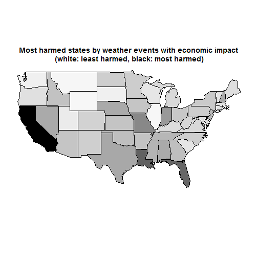
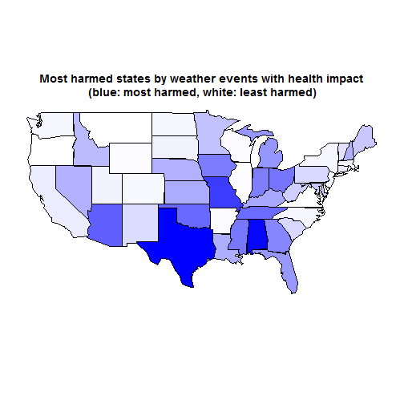

Storms and severe weather can have big health and economic consequences. The understanding of the specific types of events associated with the greatest consequences can help inform disaster preparedness policies that can potentially mitigate damages and help target limited resources. The purpose of the current study is to identify the specific weather-related events that are associated witht the greatest amount of economic and health consequence. Data for this analysis come from the U.S. National Oceanic and Atmospheric Administration's (NOAA) storm database. Based on an exploratory analysis of the NOAA storm database, the storm related events associated with the greatest number of fatalities were tornados and heat. The greatest amount of economic damage was due to winds (e.g., tropical storm, storm surge, hurricane, and typhoons) and flooding.
rawdata <- read.csv(bzfile("C:/Users/hsofoian/Desktop/DataScience/Course 5 - Reproducible Research/data/repdata_data_StormData.csv.bz2"))
data <- rawdata[, c("STATE", "EVTYPE", "FATALITIES", "INJURIES", "PROPDMG",
"PROPDMGEXP", "CROPDMG", "CROPDMGEXP")]
colnames(data) <- tolower(colnames(data))
data$evtype <- factor(toupper(data$evtype))
data$propdmgexp <- factor(toupper(data$propdmgexp))
data$cropdmgexp <- factor(toupper(data$cropdmgexp))
exponents <- data.frame(c("", "0", "H", "K", "M", "B"), c(1, 1, 10^2, 10^3,
10^6, 10^9))
colnames(exponents) <- c("validexp", "multiplier")
data <- subset(data, (cropdmgexp %in% exponents$validexp) & (propdmgexp %in%
exponents$validexp))
# convert damage values in number
colnames(exponents) <- c("validexp", "propdmgmultiplier")
data <- merge(data, exponents, by.x = "propdmgexp", by.y = "validexp")
data$propdmg <- (data$propdmg * data$propdmgmultiplier)
colnames(exponents) <- c("validexp", "cropdmgmultiplier")
data <- merge(data, exponents, by.x = "cropdmgexp", by.y = "validexp")
data$cropdmg <- (data$cropdmg * data$cropdmgmultiplier)
Calculation of the economic impact of different weather events.
data$totalCost <- data$propdmg + data$cropdmg #define total cost
economicData <- subset(data, totalCost > 0) #select only events with cost > 0
economicData <- economicData[, c("state", "evtype", "totalCost")]
library(reshape2)
library(plyr)
economicData <- dcast(economicData, state ~ evtype, fun.aggregate = sum, value.var = "totalCost")
economicData <- melt(economicData, id = "state")
economicData <- arrange(economicData, state, desc(value))
The event that generated the higher totalCost:
economicData <- split(economicData, economicData$state)
economicData <- lapply(economicData, function(x) x[1, ])
economicData <- melt(economicData, id = "state", id.vars = "variable", measure.vars = "value")
Calculation of the health impact of fatalities and injuries caused by each event.
# define total health cost through pca
pca <- data[, c("fatalities", "injuries")]
pca <- princomp(pca)
summary(pca)
## Importance of components:
## Comp.1 Comp.2
## Standard deviation 5.4379 0.72389
## Proportion of Variance 0.9826 0.01741
## Cumulative Proportion 0.9826 1.00000
data$totalHealthCost <- pca$scores[, 1]
healthData <- subset(data, totalHealthCost > 0) #select only events with cost > 0
healthData <- healthData[, c("state", "evtype", "totalHealthCost")]
# sum over states by type of event and arrange for decreasing costs
healthData <- dcast(healthData, state ~ evtype, fun.aggregate = sum, value.var = "totalHealthCost")
healthData <- melt(healthData, id = "state")
healthData <- arrange(healthData, state, desc(value))
healthData <- split(healthData, healthData$state)
healthData <- lapply(healthData, function(x) x[1, ])
healthData <- melt(healthData, id = "state", id.vars = "variable", measure.vars = "value")
Costs in Bn $
colnames(economicData) <- c("eventType", "totalCost_Bn", "state")
economicData <- economicData[, c("state", "eventType", "totalCost_Bn")]
# convert in Bn$
economicData$totalCost_Bn <- economicData$totalCost_Bn/10^9
economicData[!is.na(economicData$totalCost_Bn), ]
## state eventType totalCost_Bn
## 1 AK FLOOD 1.571e-01
## 2 AL TORNADO 6.378e+00
## 3 AM WATERSPOUT 5.102e-03
## 4 AN MARINE THUNDERSTORM WIND 1.690e-04
## 5 AR TORNADO 2.592e+00
## 6 AS TSUNAMI 8.102e-02
## 7 AZ HAIL 2.829e+00
## 8 CA FLOOD 1.174e+02
## 9 CO HAIL 1.515e+00
## 10 CT TORNADO 5.962e-01
## 11 DC TROPICAL STORM 1.276e-01
## 12 DE COASTAL FLOOD 4.015e-02
## 13 FL HURRICANE/TYPHOON 2.855e+01
## 14 GA TORNADO 3.272e+00
## 15 GM MARINE TSTM WIND 3.226e-03
## 16 GU TYPHOON 6.011e-01
## 17 HI FLASH FLOOD 1.571e-01
## 18 IA FLOOD 2.970e+00
## 19 ID FLOOD 1.142e-01
## 20 IL RIVER FLOOD 1.003e+01
## 21 IN TORNADO 2.595e+00
## 22 KS TORNADO 2.682e+00
## 23 KY TORNADO 8.907e-01
## 24 LA STORM SURGE 3.174e+01
## 26 LE MARINE THUNDERSTORM WIND 2.500e-05
## 28 LM MARINE TSTM WIND 1.205e-03
## 29 LO MARINE TSTM WIND 5.000e-05
## 30 LS MARINE TSTM WIND 4.000e-04
## 31 MA TORNADO 7.560e-01
## 32 MD TROPICAL STORM 5.392e-01
## 33 ME ICE STORM 3.182e-01
## 34 MH HIGH SURF 5.000e-03
## 35 MI TORNADO 1.073e+00
## 36 MN TORNADO 1.917e+00
## 37 MO TORNADO 4.823e+00
## 38 MS HURRICANE/TYPHOON 1.501e+01
## 39 MT HAIL 1.291e-01
## 40 NC HURRICANE 6.405e+00
## 41 ND FLOOD 3.990e+00
## 42 NE TORNADO 1.746e+00
## 43 NH ICE STORM 6.493e-02
## 44 NJ FLOOD 2.112e+00
## 45 NM WILD/FOREST FIRE 1.510e+00
## 46 NV FLOOD 6.839e-01
## 47 NY FLASH FLOOD 1.835e+00
## 48 OH TORNADO 2.285e+00
## 49 OK TORNADO 3.319e+00
## 50 OR FLOOD 7.410e-01
## 51 PA TORNADO 1.796e+00
## 53 PK MARINE HIGH WIND 3.100e-05
## 55 PR HURRICANE 2.275e+00
## 56 PZ MARINE STRONG WIND 7.600e-05
## 57 RI FLOOD 9.286e-02
## 58 SC TORNADO 5.368e-01
## 59 SD TORNADO 2.319e-01
## 60 SL MARINE TSTM WIND 1.500e-05
## 62 TN FLOOD 4.250e+00
## 63 TX DROUGHT 6.722e+00
## 64 UT FLOOD 3.319e-01
## 65 VA HURRICANE/TYPHOON 5.266e-01
## 66 VI HURRICANE 2.822e-02
## 67 VT FLOOD 1.112e+00
## 68 WA HAIL 2.199e-01
## 69 WI FLASH FLOOD 1.188e+00
## 70 WV FLASH FLOOD 4.865e-01
## 71 WY HAIL 1.131e-01
library(maps)
economicData <- economicData[!is.na(economicData$totalCost_Bn), ]
data(state.fips)
tmp <- state.fips
tmp <- data.frame(tmp$abb, tmp$polyname)
colnames(tmp) <- c("state", "stateName")
economicData <- merge(economicData, tmp)
economicData$totalCost_Bn <- (economicData$totalCost_Bn)^(1/3)
economicData$normCost <- (economicData$totalCost_Bn - min(economicData$totalCost_Bn))/(max(economicData$totalCost_Bn) -
min(economicData$totalCost_Bn))
# plot
pal <- colorRamp(c("white", "black"))
map("state", regions = economicData$stateName, lty = 1, lwd = 1, boundary = TRUE,
fill = TRUE, col = rgb(pal(economicData$normCost)/255))
title(main = "Most harmed states by weather events with economic impact\n (white: least harmed, black: most harmed)")

colnames(healthData) <- c("eventType", "totalHealthCost", "state")
healthData <- healthData[, c("state", "eventType", "totalHealthCost")]
healthData[!is.na(healthData$totalHealthCost), ]
## state eventType totalHealthCost
## 1 AK ICE STORM 33.4125
## 2 AL TORNADO 7877.1258
## 3 AM MARINE THUNDERSTORM WIND 21.2689
## 4 AN MARINE STRONG WIND 17.4015
## 5 AR TORNADO 5064.5173
## 6 AS TSUNAMI 130.1814
## 7 AZ DUST STORM 176.8428
## 8 CA WILDFIRE 611.4135
## 9 CO TORNADO 253.2910
## 10 CT TORNADO 699.6226
## 11 DC EXCESSIVE HEAT 315.6478
## 12 DE TORNADO 70.9818
## 13 FL TORNADO 3283.4283
## 14 GA TORNADO 3867.7126
## 16 GU HURRICANE/TYPHOON 332.3795
## 17 HI HIGH SURF 20.4146
## 18 IA TORNADO 2175.5368
## 19 ID THUNDERSTORM WIND 73.4522
## 20 IL TORNADO 4099.1294
## 21 IN TORNADO 4187.3505
## 22 KS TORNADO 2688.0431
## 23 KY TORNADO 2774.4141
## 24 LA TORNADO 2580.4577
## 28 LM MARINE THUNDERSTORM WIND 0.9347
## 31 MA TORNADO 1756.8414
## 32 MD EXCESSIVE HEAT 461.5193
## 33 ME LIGHTNING 64.2321
## 34 MH HIGH SURF 0.8426
## 35 MI TORNADO 3340.9094
## 36 MN TORNADO 1952.4496
## 37 MO TORNADO 4287.0509
## 38 MS TORNADO 6191.3236
## 39 MT WILD/FOREST FIRE 31.5576
## 40 NC TORNADO 2501.9325
## 41 ND TORNADO 318.3618
## 42 NE TORNADO 1136.1336
## 43 NH LIGHTNING 78.3421
## 44 NJ EXCESSIVE HEAT 299.5644
## 45 NM TORNADO 151.4231
## 46 NV FLOOD 49.8827
## 47 NY TORNADO 304.1441
## 48 OH TORNADO 4407.0040
## 49 OK TORNADO 4767.5576
## 50 OR HIGH WIND 49.1107
## 51 PA TORNADO 1221.4486
## 55 PR HEAVY RAIN 9.6124
## 56 PZ MARINE STRONG WIND 2.7763
## 57 RI TORNADO 22.6628
## 58 SC TORNADO 1288.2890
## 59 SD TORNADO 439.4989
## 62 TN TORNADO 4706.3186
## 63 TX TORNADO 8105.6196
## 64 UT WINTER STORM 411.2769
## 65 VA TORNADO 901.2121
## 66 VI LIGHTNING 0.8887
## 67 VT TSTM WIND 22.6593
## 68 WA TORNADO 302.3291
## 69 WI TORNADO 1571.1703
## 70 WV TSTM WIND 135.0149
## 71 WY WINTER STORM 117.6506
library(maps)
healthData <- healthData[!is.na(healthData$totalHealthCost), ]
data(state.fips)
tmp <- state.fips
tmp <- data.frame(tmp$abb, tmp$polyname)
colnames(tmp) <- c("state", "stateName")
healthData <- merge(healthData, tmp)
healthData$normCost <- (healthData$totalHealthCost - min(healthData$totalHealthCost))/(max(healthData$totalHealthCost) -
min(healthData$totalHealthCost))
# plot
pal <- colorRamp(c("white", "blue"))
map("state", regions = healthData$stateName, lty = 1, lwd = 1, boundary = TRUE,
fill = TRUE, col = rgb(pal(healthData$normCost)/255))
title(main = "Most harmed states by weather events with health impact\n (blue: most harmed, white: least harmed)")
